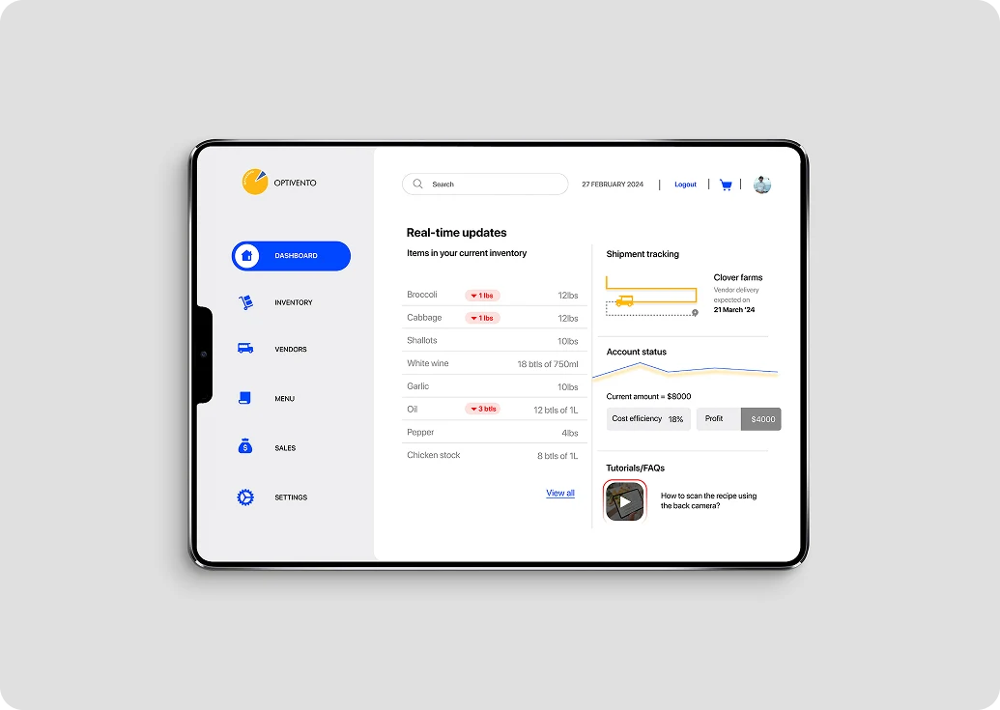
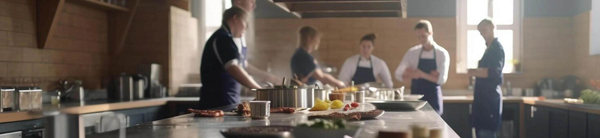
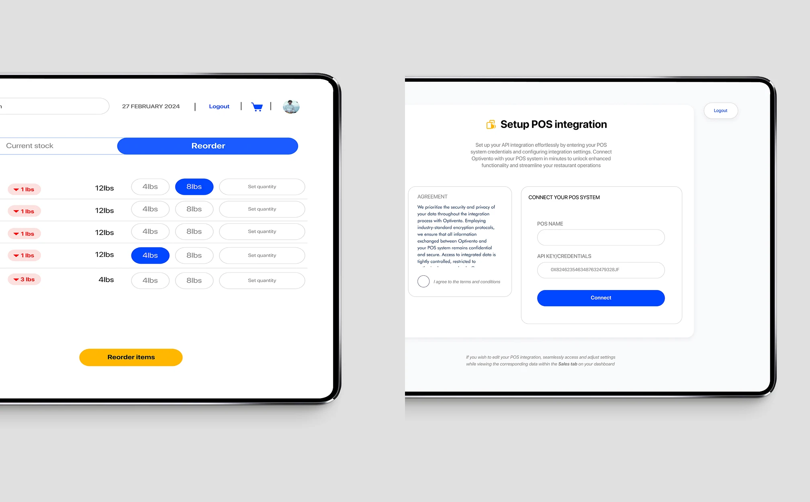
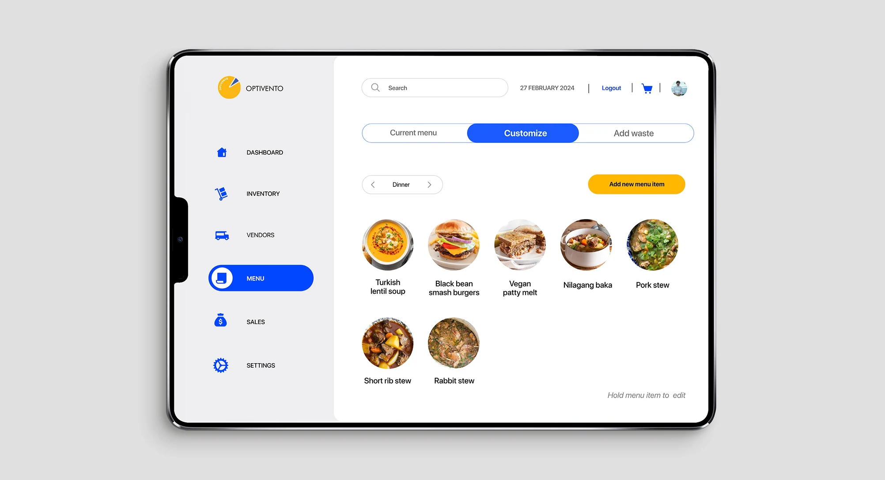
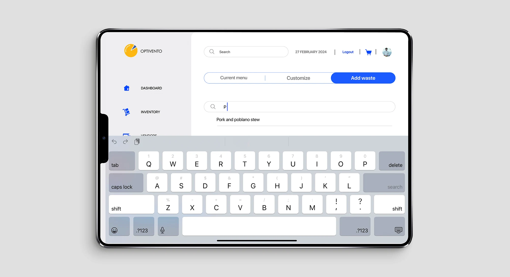
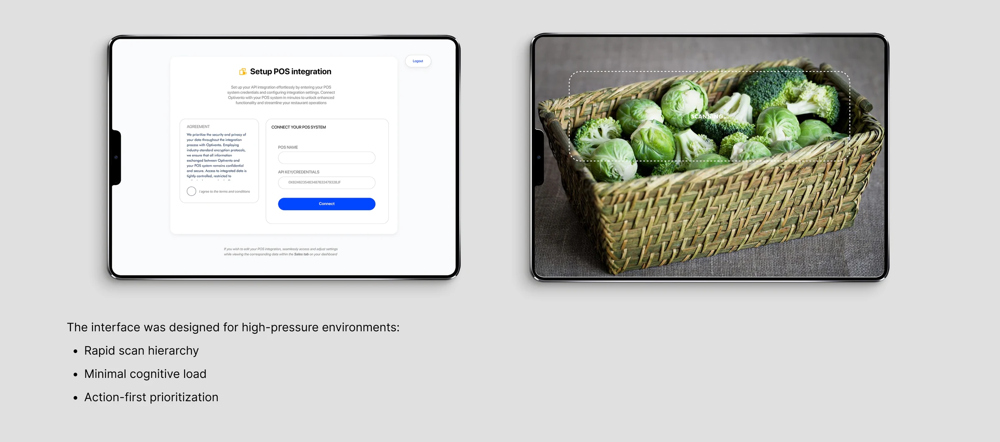

Galls · shipped
Uniform configuration, collapsed into one screen
The same problem with production data behind it. A multi-page enterprise configuration reduced to a single validated checkpoint.
Optivento · Restaurant operations · Concept, not shipped
Restaurants run on margins thin enough that small waste is existential. The data to prevent it already exists, in a POS, a supplier invoice, a paper prep list. It is just never in front of the person at the moment they decide. That gap is the product.

READ THIS FIRST. Optivento is a self-directed graduate project. It was never launched, so there are no production metrics on this page. What follows is what the research established and what I designed from it, the numbers below are industry benchmarks and modelled projections, and each one says which.
01 Why this problem
Take a restaurant doing $1M in sales on a 3.5% profit margin, roughly $35,000 of profit. Cut non-labour costs by 2% and profit rises by about 29%, near $20,000 straight to the bottom line.
That is the entire business case, and it is why inventory software exists at all. The reason it keeps failing is not that operators don't understand the maths. It is that a 2% saving is made of a hundred small decisions taken at 6am by someone with flour on their hands, and none of those moments have the numbers attached.
02 Field research
I interviewed twelve chefs across different cuisines and restaurant sizes about how they actually manage inventory, prep and recipes. I expected to hear that the software was bad. What I heard was that the software was irrelevant, because the work happens somewhere it can't see.
“There is a need for a structure. I think this place will benefit more from an organisational structure.”
Lexie · sous chef
“Whether it's a special event, a busy lunch rush, or a regular workday, this initial planning phase is crucial to ensure everything runs smoothly.”
Sanya · head chef

03 Directions considered
Charts of cost, waste and margin, refreshed daily. It demos beautifully and it changes nothing, because the person looking at it is not the person deciding how much cabbage to order on Thursday. Every chef I spoke to had access to reports they never opened.
Rejected: wrong person, wrong momentReplace paper with an app and let structure follow. Closer to the real behaviour, but it makes the kitchen pay a data-entry tax up front for a benefit that arrives weeks later. Nothing survives a lunch rush if it costs time during one.
Rejected: cost now, value laterLet the system track stock on its own wherever it can. The till already knows what has been sold, the camera can read a delivery note, the supplier already sends an invoice. Then show the cost only at the moments the kitchen is already deciding something: placing an order, pricing a dish, changing a recipe. The staff never enter data for its own sake, because every time they do, they get an answer back straight away.
Built04 What I designed
Three principles held the architecture together, and each one exists to stop the product becoming another reporting layer.




05 Projected impact
8-12%
reduction in food waste
15-20%
improvement in inventory accuracy
~30%
reduction in manual logging time
MODELLED. Projections from published industry benchmarks for comparable inventory systems, applied to the workflows observed in the twelve interviews. Not measured. No version of Optivento has run in a live kitchen, and I would not present these as results.
06 Honest limits
Next case study
Galls · shipped
The same problem with production data behind it. A multi-page enterprise configuration reduced to a single validated checkpoint.
It never shipped, and working out why taught me more than the parts that went well. Happy to talk through what I would cut and how I would run the research differently.
Or copy it: gokhalesumeet2@gmail.com